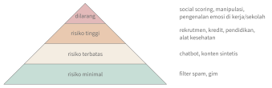

Bab 35
AI, Hukum, dan Manusia
Di sela kuliah teknis, saya mengikuti serangkaian mata kuliah yang melihat AI dari luar: AI and law, yang diberikan oleh pengacara dan ahli hukum teknologi; AI in society dan technology and society dari kacamata sosiologi; robopsychology dan communicating AI dari Martina Mara, yang laboratoriumnya meneliti bagaimana manusia memandang dan memperlakukan mesin. Bab ini merangkum apa yang saya bawa pulang dari kuliah-kuliah itu. Ia lebih sedikit rumusnya, tetapi pertanyaannya tidak kalah sulit.
Apa itu sistem AI menurut hukum
Hukum butuh definisi, dan definisi AI ternyata sulit. AI Act Uni Eropa (European Parliament and Council of the European Union 2024) memakai definisi yang berakar pada pekerjaan kelompok ahli tingkat tinggi Komisi Eropa (High-Level Expert Group on Artificial Intelligence 2019): sistem berbasis mesin yang dirancang untuk beroperasi dengan berbagai tingkat otonomi, mungkin beradaptasi setelah dipasang, dan untuk tujuan tertentu menyimpulkan dari input yang diterimanya cara menghasilkan keluaran seperti prediksi, konten, rekomendasi, atau keputusan yang bisa memengaruhi lingkungan fisik atau virtual. Kata kuncinya adalah menyimpulkan. Program yang hanya menjalankan aturan yang ditulis manusia secara eksplisit umumnya tidak termasuk, sedangkan model yang dilatih dari data termasuk.
AI Act: regulasi berbasis risiko
Slide kuliah menyusun linimasa AI Act: diusulkan Komisi Eropa pada April 2021, diterbitkan di Lembaran Resmi Uni Eropa pada 12 Juli 2024, dan mulai berlaku pada 1 Agustus 2024, dengan ketentuan-ketentuannya berlaku bertahap. Larangan untuk sistem dengan risiko yang tidak dapat diterima berlaku sejak Februari 2025, kewajiban bagi penyedia model AI serbaguna sejak Agustus 2025, dan menurut jadwal awal sebagian besar ketentuan lainnya mulai Agustus 2026. Jadwal ini kemudian diubah. Paket penyederhanaan yang dikenal sebagai Digital Omnibus on AI, yang disepakati pada Mei 2026 dan diterbitkan di Lembaran Resmi pada akhir Juli 2026, menunda kewajiban untuk sistem berisiko tinggi yang berdiri sendiri ke 2 Desember 2027, dan untuk AI yang tertanam di produk yang sudah diatur regulasi lain ke 2 Agustus 2028. Kewajiban transparansi, misalnya untuk konten sintetis, tetap berjalan sejak Agustus 2026, dengan masa transisi sampai Desember 2026 untuk sistem yang sudah beredar. Ketika buku ini ditulis, peraturannya masih bergerak, sehingga pembaca sebaiknya selalu memeriksa versi terbarunya.
Inti AI Act adalah piramida risiko. Di puncak ada praktik yang dilarang sama sekali: penilaian sosial warga negara (social scoring), manipulasi yang mengeksploitasi kerentanan orang, pengenalan emosi di tempat kerja dan sekolah, kategorisasi biometrik untuk menyimpulkan ras, keyakinan politik, atau orientasi seksual, serta pengumpulan gambar wajah secara tidak tertarget. Di bawahnya ada sistem berisiko tinggi, misalnya AI dalam rekrutmen, penilaian kredit, pendidikan, infrastruktur kritis, dan alat kesehatan. Sistem ini boleh dipakai, tetapi penyedianya wajib menjalankan manajemen risiko, menjaga kualitas data, membuat dokumentasi teknis, mencatat log, memastikan pengawasan manusia, serta memenuhi syarat akurasi dan ketahanan. Lebih ke bawah, sistem dengan risiko terbatas seperti chatbot terutama dikenai kewajiban transparansi: pengguna harus tahu bahwa mereka berbicara dengan mesin. Sistem lainnya, seperti filter spam atau AI dalam permainan video, praktis bebas (Gambar 35.1).

AI Act tidak hanya mengatur pembuat sistem. Pihak yang memakai sistem berisiko tinggi dalam kegiatan profesionalnya, disebut deployer, wajib memakainya sesuai petunjuk, menugaskan orang yang kompeten untuk mengawasinya, memantau operasinya, dan menyimpan log. Lembaga publik dan beberapa penyedia layanan penting juga harus menilai dampak sistem itu terhadap hak-hak dasar sebelum memakainya. Sejak Februari 2025, penyedia maupun pengguna sistem AI juga wajib berupaya memastikan bahwa staf yang menangani sistem itu punya literasi AI yang memadai, kewajiban yang menyambung langsung dengan kuliah communicating AI di bawah.
Model AI serbaguna, seperti model bahasa besar, ditambahkan menjelang akhir perundingan. Penyedianya wajib menyiapkan dokumentasi teknis dan informasi bagi pihak yang membangun aplikasi di atasnya. Model yang dilatih dengan total komputasi lebih dari \(10^{25}\) operasi floating point dianggap berpotensi membawa risiko sistemik dan dikenai kewajiban tambahan: evaluasi model, mitigasi risiko, pelaporan insiden serius, dan keamanan siber. Untuk pelanggaran, denda bisa mencapai 35 juta euro atau tujuh persen omzet global tahunan, mana yang lebih tinggi.
Data pribadi dan GDPR
Sebelum AI Act, perangkat hukum utama untuk AI di Eropa adalah GDPR (European Parliament and Council of the European Union 2016), yang berlaku sejak 25 Mei 2018. GDPR mengatur pemrosesan data pribadi, yaitu informasi apa pun yang berkaitan dengan orang yang bisa diidentifikasi. Enam prinsipnya menjadi kerangka berpikir yang berguna bagi siapa pun yang melatih model: pemrosesan harus sah, adil, dan transparan; data hanya dipakai untuk tujuan yang dinyatakan; data yang dikumpulkan sesedikit mungkin; data harus akurat; data tidak disimpan lebih lama dari perlu; dan integritas serta kerahasiaannya dijaga. Pengendali data bertanggung jawab membuktikan kepatuhan pada semua prinsip itu.
Pemrosesan data pribadi hanya sah kalau punya salah satu dari enam dasar hukum: persetujuan orang yang bersangkutan, pelaksanaan kontrak, kewajiban hukum, perlindungan kepentingan vital seseorang, pelaksanaan tugas untuk kepentingan umum, atau kepentingan sah pengendali yang tidak dikalahkan oleh hak orang yang datanya diproses. Persetujuan, yang paling sering dibayangkan orang, justru sering bukan pilihan terbaik untuk melatih model, karena ia harus bebas, spesifik, dan bisa ditarik kapan saja, dan menghapus pengaruh satu orang dari model yang sudah dilatih bukan perkara mudah. Orang yang datanya diproses juga punya hak: mengetahui data apa yang disimpan, membetulkannya, menghapusnya, membawanya ke penyedia lain, dan menolak pemrosesan tertentu. Data kesehatan, data genetik, dan data biometrik termasuk kategori khusus yang pemrosesannya pada dasarnya dilarang kecuali ada pengecualian yang jelas, aturan yang relevan bagi bab-bab ilmu hayati di buku ini.
Satu ketentuan berbicara langsung tentang AI. Seseorang berhak untuk tidak tunduk pada keputusan yang semata-mata didasarkan pada pemrosesan otomatis, termasuk profiling, kalau keputusan itu berakibat hukum atau berdampak signifikan baginya. Ada pengecualian, misalnya kalau diperlukan untuk kontrak, diizinkan undang-undang, atau disetujui secara eksplisit, tetapi pesannya jelas: manusia harus tetap punya tempat dalam keputusan penting. Bagi pengembang, ini berarti penilaian dampak perlindungan data sebelum sistem berisiko dijalankan, dan perlindungan privasi yang dirancang sejak awal (privacy by design) alih-alih ditambal belakangan.
Kuliah juga membahas pertanggungjawaban. Arahan tanggung jawab produk Uni Eropa yang direvisi memperluas definisi produk sehingga mencakup perangkat lunak, termasuk sistem AI, dan meringankan beban pembuktian bagi korban dalam kasus yang secara teknis rumit. Usulan arahan tanggung jawab AI membahas pengungkapan bukti dan anggapan hubungan sebab-akibat yang bisa dibantah ketika sistem AI terlibat dalam kerugian.
Bagi orang teknik, prinsip meminimalkan data punya padanan matematis yang menarik. Differential privacy (Dwork dkk. 2006) menjamin bahwa hasil sebuah analisis hampir tidak berubah, apakah data satu orang tertentu ikut atau tidak. Caranya dengan menambahkan noise yang terukur. Untuk menghitung berapa pasien di sebuah rumah sakit yang mengidap penyakit tertentu, satu orang paling banyak mengubah hitungan sebesar satu. Menambahkan noise Laplace dengan skala \(1/\varepsilon\) membuat peluang setiap hasil berubah paling banyak dengan faktor \(e^\varepsilon\) ketika satu orang ditambahkan atau dihapus. Dengan \(\varepsilon=1\), noise-nya punya simpangan baku sekitar \(1{,}4\): tidak berarti untuk hitungan ribuan, tetapi cukup untuk menyamarkan apakah satu orang tertentu ada di dalam data. Parameter \(\varepsilon\) adalah anggaran privasi. Semakin kecil, semakin terlindung, dan semakin berisik hasilnya.
Keadilan bisa diukur, tetapi tidak sekaligus
Kalau sebuah model memutuskan sesuatu tentang manusia, kita bisa bertanya apakah ia adil terhadap kelompok yang berbeda. Pertanyaan ini ternyata punya beberapa jawaban matematis yang saling bertentangan. Misalkan sebuah model menyetujui kredit untuk 50 dari 100 pemohon di kelompok A dan 30 dari 100 di kelompok B. Demographic parity menuntut tingkat persetujuan yang sama. Di sini selisihnya \(0{,}2\), dan rasionya \(0{,}6\), di bawah ambang empat perlima yang dipakai sebagai pedoman praktis di beberapa yurisdiksi. Tetapi mungkin kelompok B memang lebih sering gagal bayar dalam data. Ukuran lain, equal opportunity (Hardt, Price, dan Srebro 2016), hanya menuntut bahwa di antara orang yang benar-benar mampu membayar, tingkat persetujuannya sama di kedua kelompok, yaitu true positive rate yang setara. Ukuran ketiga, kalibrasi, menuntut bahwa skor risiko \(0{,}7\) berarti peluang gagal bayar \(0{,}7\) di kelompok mana pun.
Chouldechova (2017) memperlihatkan bahwa kalau tingkat dasar kedua kelompok berbeda, sebuah skor yang terkalibrasi tidak mungkin sekaligus menyamakan tingkat positif palsu dan tingkat negatif palsu antar kelompok, kecuali prediksinya sempurna. Jadi memilih ukuran keadilan bukan keputusan teknis semata, melainkan keputusan nilai: kesalahan mana yang paling merugikan, dan bagi siapa. Inilah titik di mana kuliah hukum dan sosiologi bertemu dengan kuliah teknis. Model bisa dirancang untuk memenuhi ukuran mana pun yang dipilih, tetapi pilihannya harus dibuat dan dipertanggungjawabkan oleh manusia.
Teknologi dan masyarakat
Kuliah sosiologi dimulai dengan konsep sociological imagination dari Mills (1959): kemampuan melihat bagaimana masalah pribadi terhubung dengan isu sosial yang lebih besar. Orang yang ditolak kreditnya oleh algoritme mengalami masalah pribadi. Kalau ribuan orang dari lingkungan yang sama ditolak dengan cara serupa, itu isu sosial.
Dari sana kuliah menolak technological determinism, pandangan bahwa teknologi berkembang menurut logikanya sendiri lalu mengubah masyarakat. Sebaliknya, teknologi dibentuk oleh pilihan sosial: siapa yang mendanai riset, data apa yang dikumpulkan, masalah siapa yang dianggap penting, dan bagaimana sebuah sistem akhirnya dipakai. Strategi AI nasional berbagai negara menunjukkan bahwa satu teknologi yang sama dibayangkan dengan berbeda di tempat yang berbeda. Benjamin (2019) memperlihatkan bagaimana sistem yang tampak netral bisa mereproduksi ketidakadilan rasial, karena ia belajar dari data dan keputusan masa lalu. Zuboff (2019) menyebut ekonomi yang mengubah perilaku manusia menjadi data untuk memprediksi dan memengaruhinya sebagai kapitalisme pengawasan. Kita sudah melihat contoh kecilnya: embedding kata yang menyerap stereotip gender (Bolukbasi dkk. 2016), sistem rekomendasi yang memperkuat popularitas (Bab 34), dan model medis yang belajar penanda rumah sakit alih-alih penyakit (Bab 25).
Bagaimana manusia memandang mesin
Robopsychology bukan psikologi untuk robot, melainkan psikologi manusia ketika berhadapan dengan mesin yang tampak cerdas. Kuliahnya dimulai dengan metode: perbedaan antara psikologi sehari-hari dan psikologi ilmiah, antara korelasi dan sebab-akibat, dan mengapa eksperimen dengan kelompok yang diacak dibutuhkan untuk menyimpulkan efek. Laboratorium Mara, misalnya, memakai realitas virtual untuk menguji bagaimana sinyal-sinyal sebuah robot kolaboratif memengaruhi perasaan aman pekerja di dekatnya.
Temuan klasik bidang ini adalah bahwa manusia memperlakukan komputer secara sosial hampir secara otomatis. Orang bersikap sopan kepada komputer, menerapkan stereotip gender pada suara mesin, dan merasa tersanjung oleh pujian dari program, meski tahu itu hanya program (Reeves dan Nass 1996; Nass dan Moon 2000). Anthropomorphism, kecenderungan memberi sifat manusia pada benda, diperkuat oleh tiga faktor menurut Epley, Waytz, dan Cacioppo (2007): ketersediaan pengetahuan tentang manusia sebagai kerangka penjelasan, kebutuhan untuk memahami dan meramalkan perilaku sesuatu, dan kebutuhan akan hubungan sosial. Semakin mirip manusia sebuah robot, semakin ia disukai, sampai titik di mana kemiripan yang hampir tetapi tidak sempurna justru terasa menyeramkan. Lembah ganjil ini, uncanny valley, diusulkan Mori, MacDorman, dan Kageki (2012) pada 1970. Kuliah juga membahas kepercayaan, kreativitas mesin, dan kebutuhan psikologis dasar manusia seperti otonomi dan kompetensi ketika bekerja bersama teknologi.
Berbicara tentang AI
Kuliah communicating AI membahas literasi AI: kompetensi yang dibutuhkan orang awam untuk memahami, menilai, dan memakai AI secara kritis (Long dan Magerko 2020). Kuliah memperlihatkan bahwa liputan media tentang AI meningkat tajam sejak sekitar 2015, dan bahwa gambar yang dipakai media untuk mewakili AI didominasi robot humanoid, otak bercahaya, dan warna biru. Sebuah survei yang dibahas di kuliah meminta peserta menilai gambar-gambar seperti ini menurut seberapa mirip manusia, seberapa menyeramkan, dan seberapa tepat mereka mewakili AI, lalu melihat bagaimana penilaian-penilaian itu saling berkaitan. Narasi fiksi dan berita tentang AI cenderung berayun antara harapan berlebihan dan ketakutan akan kepunahan, dan teori kultivasi menjelaskan bagaimana paparan berulang membentuk keyakinan publik.
Salah satu tugas kuliah meminta kami menganalisis artikel berita tentang AI, dan tugas kelompoknya merancang kampanye literasi AI untuk kelompok sasaran tertentu. Pelajarannya relevan bagi siapa pun yang bekerja dengan AI: cara kita menjelaskan sebuah sistem memengaruhi apakah orang terlalu percaya, terlalu takut, atau memakainya dengan bijak.
Apa artinya bagi pengembang
Kuliah-kuliah ini meninggalkan beberapa kebiasaan yang patut dibawa ke pekerjaan teknis. Tanyakan sejak awal siapa yang terdampak sistem yang dibangun dan bagaimana mereka bisa menggugat keputusannya. Periksa kinerja model untuk setiap kelompok, bukan hanya rata-ratanya. Kumpulkan data seperlunya. Dokumentasikan apa yang dilakukan model dan di mana batasnya, karena regulasi semakin mewajibkannya dan karena itu adalah praktik teknik yang baik. Dan jelaskan sistem dengan jujur, tanpa melebih-lebihkan kecerdasannya dan tanpa meremehkan risikonya.
Perkembangan riset
Kewajiban transparansi untuk konten sintetis menimbulkan pertanyaan teknis: bagaimana mengenali teks yang dibuat mesin? Kirchenbauer dkk. (2023) mengusulkan watermark untuk keluaran model bahasa. Sebelum setiap token dibangkitkan, sebagian kosakata dipilih secara acak sebagai daftar “hijau” berdasarkan token sebelumnya, dan peluang token hijau sedikit dinaikkan. Manusia tidak melihat perbedaannya, tetapi pemeriksa yang tahu cara memilih daftar hijau bisa menghitung berapa banyak token hijau dalam sebuah teks. Tanpa watermark, sekitar separuh token jatuh di daftar hijau secara kebetulan. Dengan watermark, jauh lebih banyak. Uji statistik \(z\) sederhana memberi nilai \(p\) yang bisa ditafsirkan, dan beberapa puluh token sudah cukup untuk deteksi yang meyakinkan. Watermark seperti ini bisa dilemahkan dengan memparafrasa teks, sehingga ia melengkapi, bukan menggantikan, kewajiban hukum dan literasi AI yang dibahas di bab ini.
Catatan sumber.
Bab ini mengikuti kuliah AI and Law I dan II (definisi AI, AI Act, GDPR, kontrak, tanggung jawab produk), AI in Society dan Technology and Society (imajinasi sosiologis, pembentukan sosial teknologi, AI dan ketidakadilan, kapitalisme pengawasan), Robopsychology (metode psikologi, antropomorfisme, kepercayaan, kreativitas), dan Communicating AI (literasi AI, citra dan narasi AI di media).